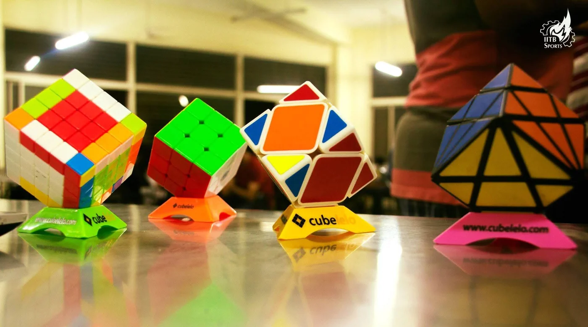
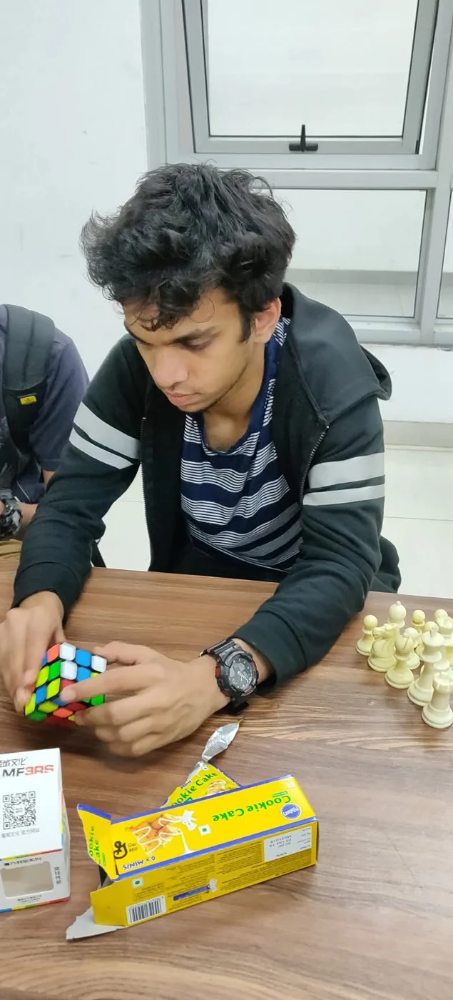
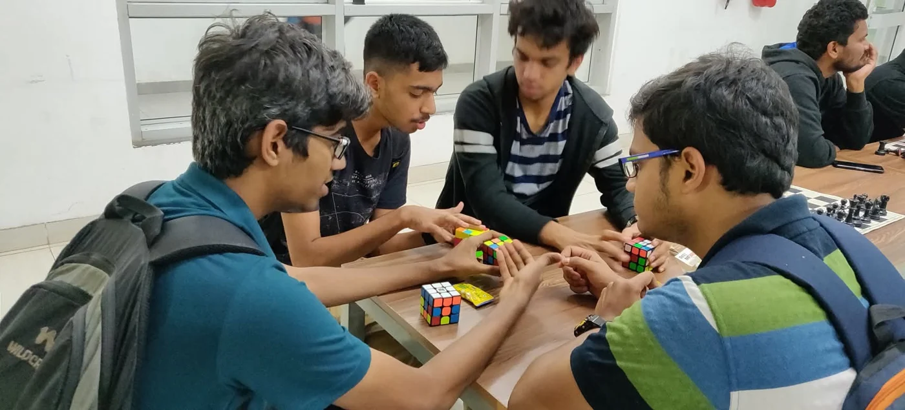

Find your
own twist.
A little curiosity.
A whole new way of seeing.
The puzzle / The community
Curiosity
comes first.
Your first solved face. An algorithm that finally makes sense. A few seconds off your best. Every cuber has a different starting point.
Rubik’s Club brings IIT Bombay’s speedcubing community together through workshops, events and friendly challenges. Its aim is an inclusive place to build focus, logical thinking, perseverance and creativity.
Find your starting pointSame curiosity / Different puzzles
Beyond
the 3×3.
Start with the familiar cube, then change the challenge. The club’s published collection includes 3×3 and 4×4 cubes, pyramid puzzles, mirror cubes and other variants.
Equipment listed in the institutional archive, captured October 2026. Ask the club about current availability and access.
See the collectionLearn / Challenge / Repeat
A little friendly
competition.
Learn a technique. Trade an idea. Put it to the test. The club’s introduction names three flagship events.
Cube Craze
One of the club’s flagship events. Ask about the next edition and how to take part.
Institute Rubik’s Cube Open
A chance to bring your practice to a shared challenge. Check the current format and eligibility with the club.
Rubik’s Relay Challenge
A club event with a team twist. Ask about the format, teams and the next opportunity to join.
Event names from the institutional archive. Current dates, formats and registration are announced by the club.
The people behind the puzzles
Another solve.
Another connection.
Puzzles on the table. Ideas passing between hands. Three photographs from the club archive; open one to look closer.






Archival photographs. Exact dates, events and venues are unverified.
Your next connection
Bring your
curiosity.
New to cubing or working on your personal best? Ask about workshops, practice, equipment and the next chance to meet other cubers.
Contact the sports office Current institutional pageSix faces / One satisfying finish
It all
clicks.
The turns behind the story
A real little puzzle.
This cube begins with an authored eight-turn scramble: L F2 U R′ D B U2 R. The scroll retraces those turns in reverse: R′ U2 B′ D′ R U′ F2 L′. Every sticker stays attached to its original piece.
In face notation, a letter means a clockwise quarter-turn viewed directly at that face; a prime (′) reverses it and 2 means a half-turn. R/L are right/left, U/D are upper/lower and F/B are front/back.
This is a short visual story, rather than a general solving tutorial, competition scramble or timed performance.
Cube notationView the physical sequence
Keep discovering
Ultimate Frisbee ↗